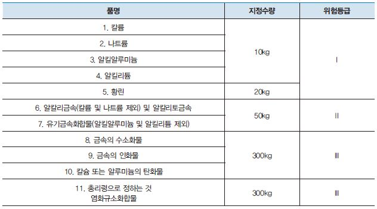

3류 위험물은 자연발화성 및 금수성 물질이며, 황린, 칼륨, 나트륨, 알킬리튬, 탄화칼슘 등이 있다. 황린을 제외한 나머지는 금수성 물질로 물과 접촉시 가연성 가스와 열이 발생하므로 주의하여야 한다. 대부분 공기 중에서 산소와 반응하여 열을 축적하고 이로 인하여 자연발화한다. 칼륨과 나트륨을 제외하고는 나머지는 불연성 물질이다.

제1류 내지 제6류 위험물 중 제5류 위험물과 더불어 가장 위험한 위험물이라고 할 수 있다. 자연발화성 및 금수성 물질로서 상온에서 고체 상태로 존재하며, 접촉 시 발열만 하는 것, 가연성 가스를 발생시키는 것, 급격하게 발화하는 것 등의 성질을 갖는다. 모두 물과 반응할 때 가연성 가스를 발생시키며, 발화의 위험이 있다.
칼륨, 나트륨은 무르며, 칼륨, 나트륨, 알킬알루미늄, 알킬리튬을 제외하고 나머지 물질들은 물보다 무겁다. 황린은 자연발화성만 가지는 물체이고 알칼리 금속은 금수성만 가진다. 물과 반응할 때 부식성 물질을 만드는 것도 있다. 가열하거나 강산화성 물질, 강산류와 접촉하면 위험성이 현저히 증가한다.